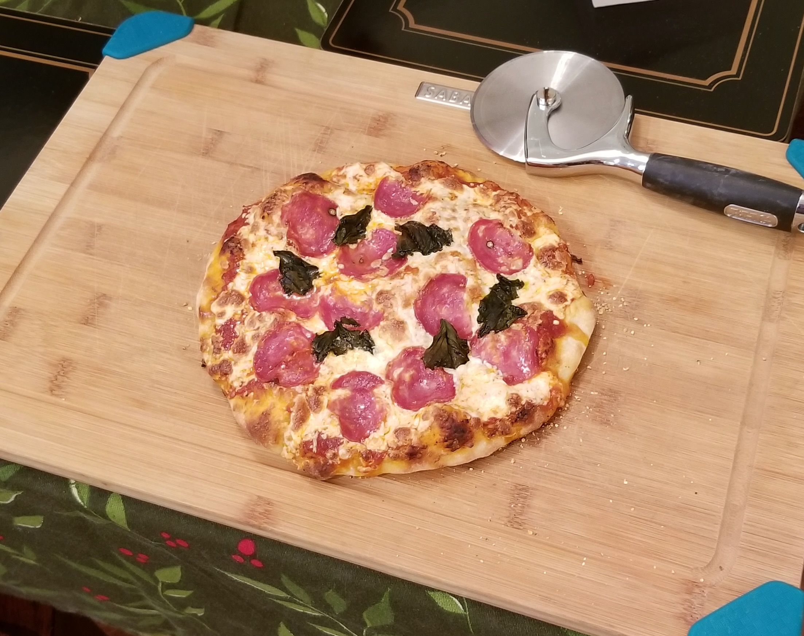
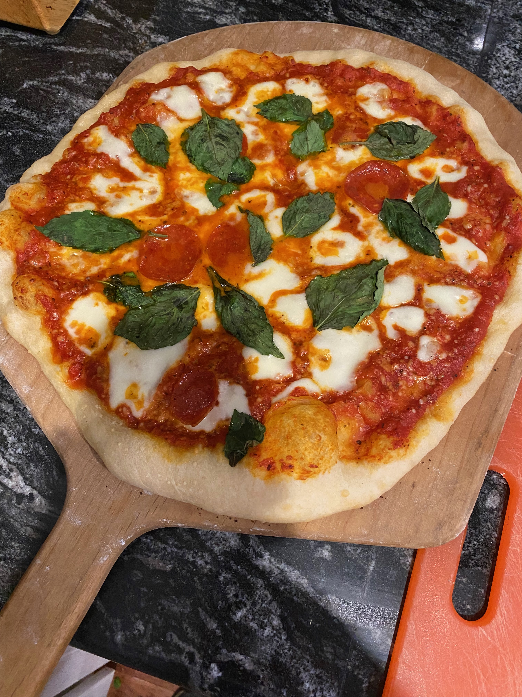

Homemade Pizza - Give It a Toss!
Homemade Italian-Style Pizza

What you'll need
- *A quality baking/cooking scale is recommended*
- Pizza stone for the oven
- King Arthur '00 Pizza Flour - 2 cups
- 1/8 tsp Active Dry Yeast
- 1/2 tsp sugar
- 1/4 tsp salt
- 3/4 cup lukewarm water
- Pizza sauce - Barilla makes a decent one
- Fresh Mozzarella
- Pepperoni or whatever other toppings you might want.
- Fresh basil
Instructions
- Mix together the dry ingredients for the dough.
At this point it's a good idea to whisk the flour to ensure there are no clumps.
- Form the dough into a ball.
- Place formed dough into a large Pyrex mixing bowl.
- Cover bowl and leave to rise at room temperature for 24hrs.
- When ready to bake, preheat oven to: ?
